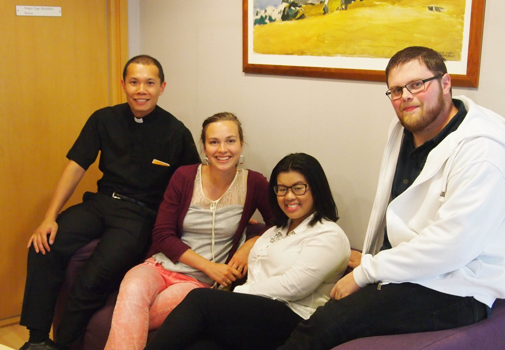

NUK-kontoret
Adresse:
Akersveien 16 A, 0177 Oslo
NUK-kontoret er bemannet mandag til fredag mellom kl. 10.00-16.00.
Mail:
nuk@nuk.no
Telefonnr:
232 19 540
Telefontiden er mellom 13.00-15.00.
Org.nr:
971 494 425
Kontonummer:
3000 16 91399 (NUk)
3000 16 91410 (Adventsaksjonen)
Du finner NUK-kontorene i Akersveien i Oslo, gaten kjent som Lille Vatikanet. Her finner du også St. Olav domkirke, Oslo Katolske Bispedømme sine kontorer, St. Eystein presteseminar, St. Sunniva skole, St. Joseph kirke og St. Olav bokhandel.
Våre frivillige bruker ofte lokalene våre til møter og lengre arbeidsøkter. Bare ta kontakt hvis du trenger å bruke et av rommene her!
